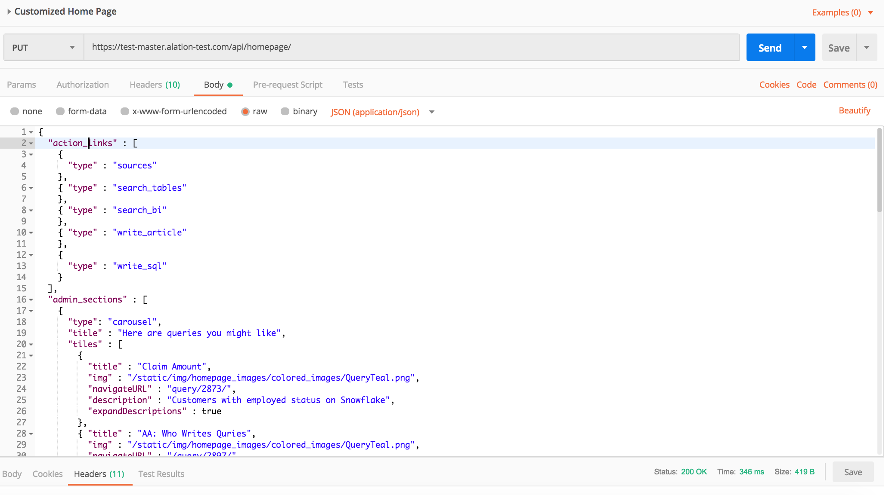

Configure the Homepage - V R4 to V R7¶
Applies to releases V R4 (5.8.x) - V R7 (5.12.x)
Configuring the Homepage¶
Homepage can be enabled by Server Admins in Labs. On how to use Labs, see Labs.
To enable the Homepage,
On the Labs tab, find the toggles for the Homepage:
Enable the new Alation homepage for all users
Enable the new Alation homepage only for Admins
First, toggle on Enable the new Alation homepage only for Admins and click Save changes on the upper right of the page. This will enable the default Homepage in your Alation instance for Server Admins only.
Click the Alation logo on the upper left to view the default Homepage. Test it out to get a feel of how it works. See Customizable Homepage for a general overview.
Perform the customizations for the Homepage to best suit your requirements. See What Sections Can Be Customized? and How To Customize? for details.
When preparing to customize the Homepage, you will need to decide:
which action links are good to have in the Promoted Actions banner
which content you would like to promote in the Curated by Your Admins section as links
how many carousel rows you need to host this content and how many tiles you need in each carousel
whether to use object windows and which specific objects you want to be linked to the Home Page using object windows.
What Sections Can Be Customized?¶
After you have enabled the Home Page feature, you will see its default version. It includes three sections with standard elements, such as carousels, tiles and object windows.
Promoted Actions banner features action links as tiles
Revisit features carousel rows with clickable tiles for pages you have visited, starred or are watching
Curated by your Admins features carousel rows with clickable tiles and object windows rows with object windows.
You can customize the Promoted Actions and Curated by Your Admins sections by:
Adding/removing elements
Changing the properties of elements
Changing the order of the nested elements.
Revisit cannot be configured.
Note
The order of the main sections cannot be changed. It is always Promoted Actions on top, Revisit under it, and Curated By Your Admins under Revisit. It is not possible to hide any of the three main sections. Revisit is NOT customizable.
How To Customize?¶
The Homepage is a JSON object that you can change and send to Alation using the dedicated Homepage API at /api/homepage/. The API will put this configuration file into /site/site_data.
Note
The configuration file will not exist unless you call the Homepage API or create a homepage.json file in this directory. Using the API is recommended, because it eliminates the need to log on using the Alation command line. The file permissions are set automatically.
Any exceptions when reading or writing to this file will be logged to error.log at /opt/alation/site/logs. You can also catch any error messages in the console of the developer tools if your web browser offers this capability.
To change the Home Page,
You can start by reviewing the sample homepage.json file available below. Note that the
admin_sectionspart of this file has values that will not work in your instance: they are sample vales. You can use this file for reference, but make sure you supply values that are valid for your Alation instance before you send customizations to Alation using the API.Change the JSON to suit your requirements. See Customizing the Home Page JSON for information on what and how to change.
Use the endpoint at /api/homepage/ to upload the changes to the Alation server. See Calling the Home Page API for details.
If required, clear the browser cache and test the customized Homepage.
When you are satisfied with the result, enable the Homepage for all users by toggling on Enable the new Alation homepage for all users switch in Labs.
Calling the Home Page API¶
Using a Python Script¶
You can use a Python script to call the Homepage API endpoint and put the customized homepage.json on the Alation server. Note that the Revisit section should not be included because it is not configurable.
Example¶
import requests
import json
# As this is an example, the Home page sections are intentionally left blank. Refer to `Customizing the Home Page JSON` on how to fill them in.
homepage_customization = {
"admin_sections" : [],
"action_links" : [],
}
# See the Developer Portal for help getting a token: https://developer.alation.com/dev/reference/refresh-access-token-overview
headers = {'token' : '<Admin token>', 'Content-Type' : 'application/json'}
# Send the request
response = requests.put("https://<alation.yourcompany.com>/api/homepage/", headers=headers, data=json.dumps(homepage_customization))
Using Postman¶
Alternatively, if using Postman,
In your workspace in Postman, create a new PUT request.
As request URL, enter the URL of your Alation instance +
"/api/homepage/". For example:https://alationcatalog.com/api/homepage/Create two Headers:
Key =
token; Value = <your API Authentication token>. This token will be used to authorize your API request. You can generate the token in Admin Settings > Server Admin > Miscellaneous > Alation API Authentication Token.Key =
Content-Type; Value =application/json. This is the format by which the API request will be passed to Alation.
Save your request.
In the Body tab, select
rawand add your customized JSON for the Homepage.Send the request to Alation.
Using Postman:
{kind=link}
Homepage JSON¶
{
"action_links" : [
{
"title" : "Browse Data Sources",
"img" : "/static/img/homepage_images/static_actions/BrowseDataSources.png",
"navigateURL" : "/sources/"
},
{
"title" : "Search Tables",
"img" : "/static/img/homepage_images/static_actions/SearchTables.png",
"navigateURL" : "/search/?otype=table&q="
},
{
"title" : "Search Business Intelligence this is too long of a long title for two lines",
"img" : "/static/img/homepage_images/static_actions/SearchBI.png",
"navigateURL" : "/search/?q=&otype=report_sources"
},
{
"title" : "Write SQL",
"img" : "/static/img/homepage_images/static_actions/WriteAQuery.png",
"navigateURL" : "/compose/"
},
{
"title" : "Write an Article",
"img" : "/static/img/homepage_images/static_actions/CreateAnArticle.png",
"navigateURL" : "/article/new"
}
],
"admin_sections" : [
{
"type": "carousel",
"title" : "Here are queries you might like",
"tiles" : [
{
"title" : "Claim Amount",
"img" : "/static/img/homepage_images/colored_images/BGPurple.png",
"navigateURL" : "/query/1962/",
"description" : "select * from test_me.",
"expandDescriptions" : true
},
{
"title" : "Best Practices by Network",
"img" : "/static/img/homepage_images/colored_images/ArticleYellow.png",
"navigateURL" : "/query/5368/",
"description" : "select * from selenium_test.test_query",
"expandDescriptions" : true
},
{
"title" : "Governance and Compliance",
"img" : "/static/img/homepage_images/colored_images/BGRed.png",
"navigateURL" : "/query/5359/",
"description" : "select * from selenium_test.test_query",
"expandDescriptions" : true
},
{
"title" : "Compliance FAQs",
"img" : "/static/img/homepage_images/colored_images/ArticleGreen.png",
"navigateURL" : "/query/5109/",
"description" : "select id FROM test_metadata_extraction_emp2.table1",
"expandDescriptions" : true
},
{
"title" : "Doctors in sanfr",
"img" : "/static/img/homepage_images/colored_images/QueryBlue.png",
"navigateURL" : "/query/1962/",
"description" : "select * from test_me.",
"expandDescriptions" : true
},
{
"title" : "International Revenues",
"img" : "/static/img/homepage_images/colored_images/ArticleYellow.png",
"navigateURL" : "/query/5368/",
"description" : "select * from selenium_test.test_query",
"expandDescriptions" : true
},
{
"title" : "Claim Amount",
"img" : "/static/img/homepage_images/colored_images/BGPurple.png",
"navigateURL" : "/query/1962/",
"description" : "select * from test_me.",
"expandDescriptions" : true
}
]
},
{
"type": "object_window_row",
"objects": [
{
"otype": "article",
"oid": 9
},
{
"otype": "bi_report",
"oid": 115
}
]
}
]
}